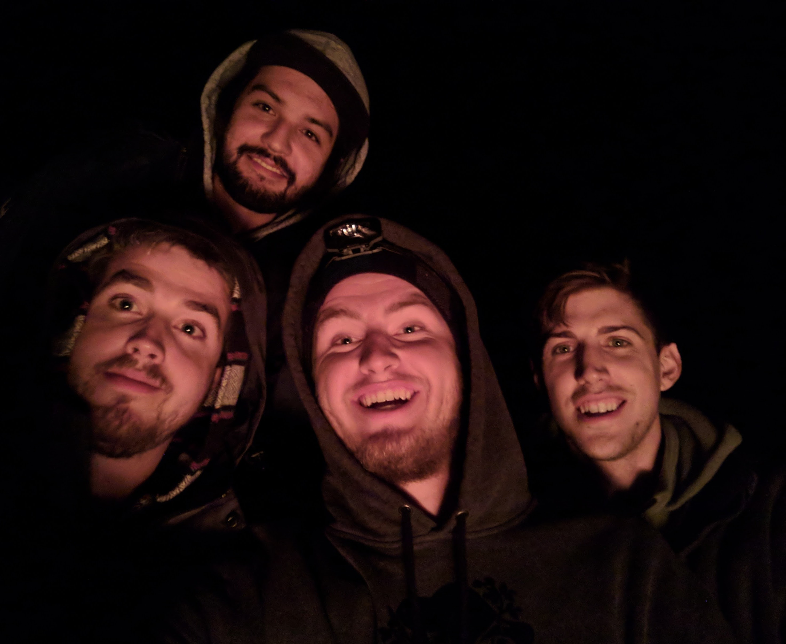
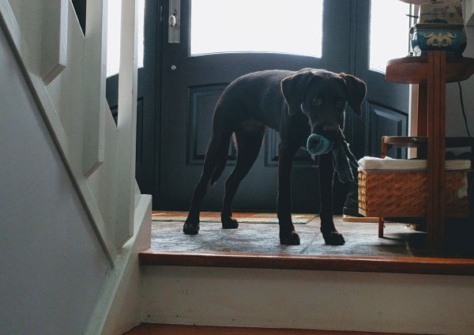
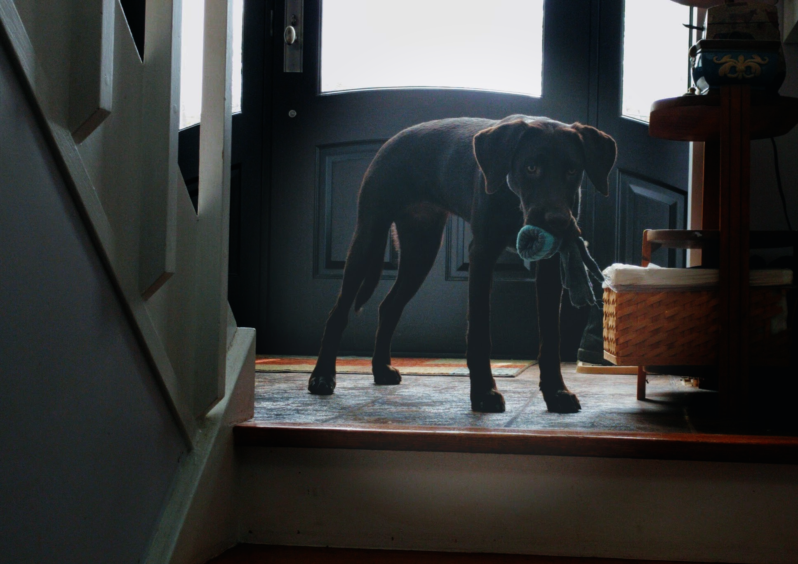

Index Page

Hey there, my name is Matt. I'm currently a 4th year computer science major at Trent University. This is my portfolio site for my multimedia and design course. Please, feel free to browse around.
If you'd like to get in contact with me, here is my main email: matt@fyrespark.com
Image Editing
This is assignment 1, below are all the images that have been manipulated. 10 manipulations to images. Original/Edited side by side.
- 2 images remove at least one person from the background. 1 remove the personal manually and fill in the space, second use multiple photographs of exactly the same location and average them
- 1 Image. Composite image. Take multiple pictures and combine them into one
- 1 Image. Change haircolor on a stock photo
- 1 Image. Swap heads/faces
- 5 Other Image Manipulations
Image 1: Remove person from background and fill in manually [Original/Edited]


For this task, I used the clone stamp tool in Gimp. I basically cloned sections of the grass and 'painted' over the cat with them. I used this tutorial to understand what I needed to do.
Image 2: Remove subject from background using 'averaging' [Original/Edited]
Incomplete. I couldn't get any photos of things to 'average' out. I tried finding some stock photos on the internet but there was nothing. I also only had my phone and was having trouble getting multiple shots perfectly still. I found this tutorial so I know how todo it. Just couldnt get any good subject matter. :(
Image 3: Composite Image [Original/Edited]
.jpg)
.png)
I combined two images together. One of the sunset I took while sailing this summer and I added a Starcraft 2 BattleCruiser :)
Image 4: Change HairColor [Original/Edited]

Used a transparency layer and painted overtop of my own hair. changing my haircolor to purple? Used this tutorial
Image 5: Swap Heads/Faces [Original/Edited]

I replaced one of my friend's faces with another friend in the same photo. I referenced this tutorial.
Image 6: Duck multiplication [Original/Edited]

Exactly what it looks like. I multiplied the ducks and tried to make it look as natural as possible.
Image 7: Touched up image removing imperfections [Original/Edited]


I touched up an image of me and a Pike. Removed blotched finger lower left. Removed face pimples. Removed shadow on shirt and leg (not my proudest job), removed items floating in water. Removed bloody gashes from fish.
Image 8: Vignette - Professional looking photo? [Original/Edited]
 I added a vignette to an image I took of my friends Chocolate Lab. I used this tutorial. Basically creating a layered mask, with an elipses and using a guassian blur effect to make the dog stand out more.
Image 8: Pull subject from photo and craft a new one with the subject [Original/Edited]

I took the teachers cat and created a new picture with him in it. I had to use the fuzzy tool in order to remove all the background and try and keep the cats fur looking realistic
Image 9: Cut out subject and add to different environment. Colorize to match environment. [Original/Edited]

Took the two cats cuddling and put them into a nature photo I took. Tried to change their color to match the environment and make them look like large jungle cats
Image 10: Colorize a black and white photo [Original/Edited]


Colorized the rose from here. I did it mostly manually. Selecting the edges of the rose with the lasso tool, then filling in with the pink color. Then finally going around the edge, using an eraser tool and paint tool to fill in any missed spots. I'm really proud of this one.
Piracy Essay
Piracy and Streaming
Pirate. When someone thinks of the word, no longer are they thinking about a bearded man with a sword and an eye patch. The word has taken on a whole new meaning in today’s society and is now a term we use to refer to someone who distributes or uses content gathered illegally. Virtual goods such as movies, music, games and even books are pirated on a day to day basis and online communities thrive off the distribution of ‘stolen’ and copied goods. Governments and law makers have yet to crack down fully on pirating; we live in an age where there is still a huge disconnect between policy and technology. Old laws are still in effect and have yet to catch up to the current technological times.
'Fact says that any site that “makes available or facilitates the availability” of rights-owners’ content without their permission is unlawful.'
What is usually pirated?
| Media Type | Description |
|---|---|
| Movies | Mostly all major box office movies and b-listers |
| Tv Shows | Basically all major tv shows. Did you know, Game of Thrones is the most illegally watched show? (source) |
| Books | All books released as ebooks are easily cracked and released online |
| Video Games | Cracked versions of most of the popular pc games are available. There is also a huge emulator market for console games. |
| Applications | Expensive licensed applications such as Microsoft Office, Adobe Photoshop, Adobe Premiere etc |
| Operating Systems | Windows, Linux, OSX etc |
Behind the times
Existing pirating laws are at the point where they are starting to catch up... very slowly. However they are still behind the technological times. Old laws are based on distribution of content via physical media. But no longer are CDs and DVDs the choice for media distribution. They may still exist, but no one that I know still owns a walkman or uses a VHS/DVD player on a regular basis. Most people are downloading their content. Whether it be through Netflix, torrents or other services.
Platform Specificity
Piracy laws were created to protect creators income stream. If consumers aren't paying for the digital goods, the creators don't get paid. However, pay to use sources have become the mainstream sources for movies and tv shows. Movies and tv shows are beginning to skip the box office or tv release and are going straight to online platforms. These online platforms such as Netflix, Hulu, Amazon, HBO Go etc, are all paid services that a user needs to be subscribe to for a monthly fee. Movies and Tv shows are being created specifically for a platforms audiences but that comes at the cost of limiting access to outsiders. As a result, piracy becomes the only means by which a consumer can access that content besides subscribing to that service. Due to all of the different services now, in order to have access to a specific show. A user will need to be dishing out money to service upon service, in order to watch the exclusive shows.
How much money is enough money?
Providers need to give a way for users to anonymously provide money based on their enjoyment of the content. Personally, If I go to a movie theatre and HATE the movie, im talking about you Transformers: Last Knight…, I’ve given the movie makers $10-$15 already for the movie. Should it not be considered payment enough If I want to, god forbid, see the movie again? I don’t want to go buy it, it wasn’t good enough for that. However, if I’d like to see it again, streaming or downloading the content should not be considered legal if I have, somewhere along the way, given money to the company in question for that piece of media. When conversations happen about the cost of media, company’s always tend to say the same thing. "We remain committed to combatting piracy and ensuring consumers have reliable, affordable options to access the content they enjoy." (Express.co.uk article)
Change where the money comes from.
Using another medium.
According to Derbyshite Council Trading Standards board in the UK: “Accessing premium paid-for content without a subscription is considered by the industry as unlawful access, although streaming something online, rather than downloading a file, is likely to be exempt from copyright laws.” (source).
Downloading/Streaming content should be considered legal if you the consumer, are already paying for a legitimate source that provides the content. Before Netflix or Amazon began to allow for offline downloading. When someone would go on a trip, they wouldn’t be able to use their pay to use service to watch content. They would have to resort to other measures like downloading from a non-official source such as TPB for their offline needs. Should this be considered an illegal action? Downloading a movie file that you have access to when internet services are not available
Conclusion
Somethings needs to change in order to create proper new Piracy/Streaming laws:
- How content is monetized
- The way content is distributed
Once all of the above processes are taken care of, we can then create new laws that protect both the creator's IP and income stream, protect consumer while benefiting them both. I suggest the following:
- Consumers who have contributed money in some fashion to the content creators for that piece of content or media, (ex movie theatre, tip, movie purchase), can at any time have access to said content no matter the medium (download, streaming etc)
- Explicitly state that actions of distributors of content for the purpose of monetary benefit should be considered illegal. But the purpose of free distribution is not.
Audio Editing Piece
I'll Never Be The Same - 1937
by: Billy Holiday
Lyrics
I'll never be the same
Guys have lost their meaning for me
I'll never be the same
Nothin's what it once used to be
And when the song birds that sing
Tell me it's spring
I can't believe their song
Once love was king
But kings can be wrong
I'll never be the same
There is such an ache in my heart
I'll never be the same
Since we're apart
But there's a lot that a smile can hide
And I know deep down inside
I'll never be the same
Never be the same again
Video Editing - Crowdfunding Video
How it's made. Behind the scenes...
The video consists of 9 video snippets overall. 8 of these videos were taken on my Nexus6P in 4K resolution. I then scaled them down in hitfilm to be 1080p. The 1 snippet that wasn't taken on my phone was taken on my logitech 1080p webcam. All of the video snippets were converted into a composite snippet so that I could add text and other effects directly to each individual snippet portion as I saw fit. As you can see watching the video, I added text to the first couple videos explaining the relation to the use case of the lighter.
Most of if not all the video snippets have a fade in and a fade out, making the transitions between the snippets clean and concise. There is also a fade in and fade out on the audio files for eachh of the snippets. I also tweaked and manipulated the audio of the snippets to ensure they weren't too loud and wouldn't overpower the background audio. The first video snippet has a light flare effect on the lighter, while I'm showing it off. There is also a color grading on the video snippet in order to make it seem more intense. The second video snippet of the fire and snow also has a little bit of color grading in order to make the colors pop a bit.
The background audio is a song by Emiljo A.C on soundcloud called It's a new life, I heard it while watching a streamer on twitch and just thought it was perfect. It is open to use and download for commercial purposes so that was a bonus.
I really tried my best to make it so the transitions between the videos coincided with a part of the song, just to add to the flow of the video. Some places I should have probably cut down some of the video to make the flow even better, but I'm pretty happy with it overall anywho.
The Campaign/Crowdfund idea
I was actually pretty stumped on what to make a video for. Originally I was thinking of maybe making a video for a piece of software I've been working on during my spare time. FyreSpark.com.However, that idea was snuffed out quickly due to all the school work going on and the task of actually putting the project public and accessible, on top of ensuring I had enough working features to show was way too much of a daunting one. So instead, I was looking around my desk and just picked an item and ended up choosing a BIC Lighter.
For the lighter campaign I wanted to show some of the functionalities and use cases of the lighter while keeping the video obviously as a spoof, lets face it, no one is going to want to crowdfund the use of a lighter. Anywho, I found some great music that was free to use as a background music and keeping with the sillyness, I just made the video to be super lighthearted.
I based the video around the idea that someone would want to possibly buy this `unique` lighter or give me money on a monthly basis to release videos of me using the lighter. Lets face it, people have done sillyer things on the internet...
The only issue I really encountered is that I did find the final portion where I was talking to be a bit slow, I could have expanded on it a little by adding some floating text showing facts that I was saying withh some animations spice things up a bit. But I decided against it due to time restrictions. I honestly did not realize video editing takes so long todo! Overall I'm happy with my silly little video and learned a lot.